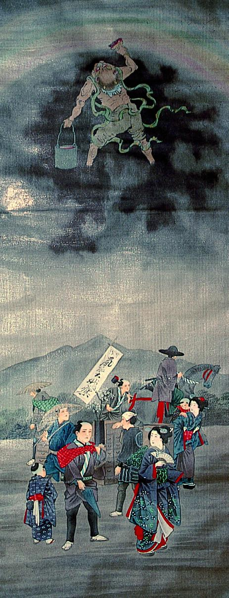

← 图鉴索引

黒雲に乗り、刷毛で天空に虹を書く鬼。バケツには虹の基が入っている。
出典：親書誌：A5_pushkin_0065：（虹神図；ニジノカミノズ）／日付：2011／資源識別子：A5_pushkin_0065_0001_0000
Copyright (c)2010- International Research Center for Japanese Studies, Kyoto, Japan. All rights reserved.